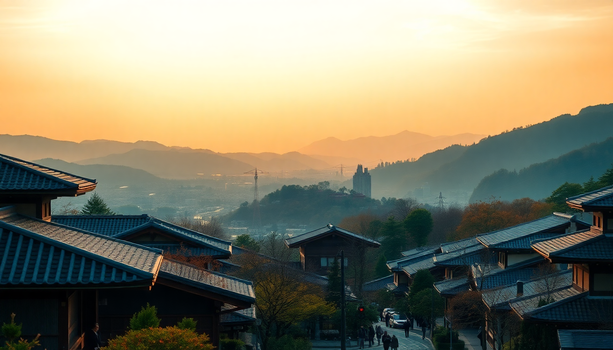

Where to Stay in Kyoto: Best Neighborhoods for First-Timers

Kyoto’s neighborhoods feel like different cities. I learned this the hard way on my first trip, when I booked a hotel near Kyoto Station thinking it was central. It was convenient for trains, but the soul of Kyoto — the lantern-lit alleys, the temple paths, the hidden tea houses — is elsewhere. Here’s what I wish I’d known before choosing where to stay.
Where should first-time visitors stay in Kyoto?
Most first-timers should base themselves in Downtown Kyoto (Kawaramachi / Shijo area) or Higashiyama. Downtown puts you within walking distance of Pontocho Alley, Nishiki Market, and endless restaurants. Higashiyama drops you right at the base of the temple district — you can walk to Kiyomizu-dera before the crowds arrive.
I stayed near Shijo-dori on my second trip and it was the sweet spot: busy enough for late-night food, quiet enough to sleep. You’re also a short bus ride from Gion and the Philosopher’s Path.
- Kawaramachi: Best for nightlife, shopping, and food. Stay near Sanjo Station.
- Higashiyama (east): Best for temple-hopping. Stay near Kiyomizu-dera or Yasaka Shrine.
- Downtown (Shijo): Best balance of convenience and atmosphere. Hotels near Nishiki Market are ideal.
Where to stay near Kyoto Station — is it worth it?
Kyoto Station is a transit hub, not a neighborhood. If you plan day trips to Nara, Osaka, or Uji, staying here makes sense. I stayed at Hotel Granvia Kyoto (literally inside the station) and could catch the 7:10 train to Fushimi Inari before it got packed.
But the area feels corporate. You’re surrounded by department stores and chain restaurants. If you want to walk out your door and stumble onto a tiny sake bar or a temple garden, this isn’t it.
- Kyoto Station area: Best for day-trippers and early-morning train departures.
- Hotel Granvia Kyoto: Direct access to the station, but pricey for what you get.
- Budget option: Sotetsu Fresa Inn — clean, small rooms, reasonable rates.
Which neighborhood is best for traditional Kyoto vibes?
Gion and Higashiyama are the postcard neighborhoods. Gion is famous for geisha sightings, but it’s also crowded and expensive. I found Gion Hatanaka ryokan worth the splurge for a one-night kimono-and-kaiseki experience, but I wouldn’t stay there for a week.
Instead, try Pontocho — a narrow alley along the Kamo River lined with tiny restaurants and bars. It feels authentic without the tourist buses. I ate at Pontocho Robatayaki one night and sat next to locals who’d been coming for decades.
- Gion: Beautiful but touristy. Book a ryokan for one night, then move.
- Pontocho: Quieter, more local, excellent food scene.
- Ryokan options: Seikoro in Higashiyama for a genuine experience without the Gion price tag.
Where should budget travelers stay?
Hostels and guesthouses cluster in Shimogyo-ku (south of downtown) and around Gojo Station. I stayed at Piece Hostel Sanjo — it’s not a party hostel; it’s clean, modern, and has a great common area for meeting other travelers.
For a private room under $80, look at Kyoto Hana Hostel near Nijo Castle. The rooms are tiny (welcome to Japan), but the staff helped me plan a day trip to Kurama and Kibune that was the highlight of my trip.
- Piece Hostel Sanjo: Great location, dorm beds and private rooms.
- Kyoto Hana Hostel: Near Nijo Castle, quieter area, excellent service.
- Budget tip: Skip breakfast at your hotel — grab an onigiri at 7-Eleven and eat it at Nijo Castle’s moat.
What’s the best area for food lovers?
Downtown Kyoto is the answer. Specifically, the streets around Nishiki Market and Shijo-dori. You can graze through Nishiki Market for lunch (try the pickled vegetables at Uchida and the skewers at Nishiki Daimon), then walk to Kikunoi for a Michelin-starred kaiseki dinner.
For late-night ramen, Men-ya Inoichi near the market serves a thick chicken broth that cured my jet lag. And if you want a drink, Bar K on Kiyamachi Street is a tiny whiskey bar run by a former salaryman who pours Yamazaki like it’s water.
- Nishiki Market: “Kyoto’s Kitchen” — go early to avoid crowds.
- Kikunoi: Three Michelin stars, requires reservation weeks in advance.
- Men-ya Inoichi: Casual, affordable, incredible ramen.
Is Arashiyama worth staying in?
I’d say no for a full stay, but yes for a night. Arashiyama is gorgeous — the bamboo grove, the river, the monkey park — but it’s a 30-minute train ride from downtown. Staying there means you wake up to empty bamboo paths (I did this, and it was magical at 6:30 AM). But you’ll have to commute for dinner options.
I stayed at Arashiyama Hana Hotel, which was comfortable and close to the grove. The on-site onsen was a bonus after a day of walking. But I missed the energy of downtown by evening.
- Best for: Early-morning bamboo grove access.
- Downside: Limited restaurant choices; most close by 9 PM.
- Hotel pick: Arashiyama Hana Hotel — mid-range, good for one night.
FAQ
Is it better to stay in a ryokan or a hotel in Kyoto? It depends on your priority. A ryokan gives you tatami mats, yukata robes, and a multi-course kaiseki dinner — it’s an experience, not just a bed. Hotels are more practical for longer stays. I’d recommend one night in a ryokan (try Seikoro in Higashiyama) and the rest in a hotel like Solaria Nishitetsu near Shijo.
How many days should I plan to stay in Kyoto? Four to five days is enough to see the major temples, spend a day in Arashiyama, and take a day trip to Nara. I did five days and still felt rushed. If you have less time, skip the Kyoto Station area and stay in Higashiyama or downtown.
What’s the best way to get around Kyoto? Buses are slow and crowded. I used the Kyoto City Subway (Tozai and Karasuma lines) for most trips, and rented a bicycle for shorter distances. Rent a Cycle Kyoto near Shijo rents bikes for ¥1,000 a day — the city is flat and bike-friendly.
Conclusion
- First-timers: Stay in Downtown (Shijo/Kawaramachi) for balance.
- Temple lovers: Higashiyama puts you at the doorstep of Kiyomizu-dera.
- Day-trippers: Kyoto Station area is practical but charmless.
- Foodies: Base yourself near Nishiki Market and Pontocho.
- Splurge: One night in a Gion ryokan for the full experience.
- Save: Piece Hostel Sanjo or Kyoto Hana Hostel for budget stays.